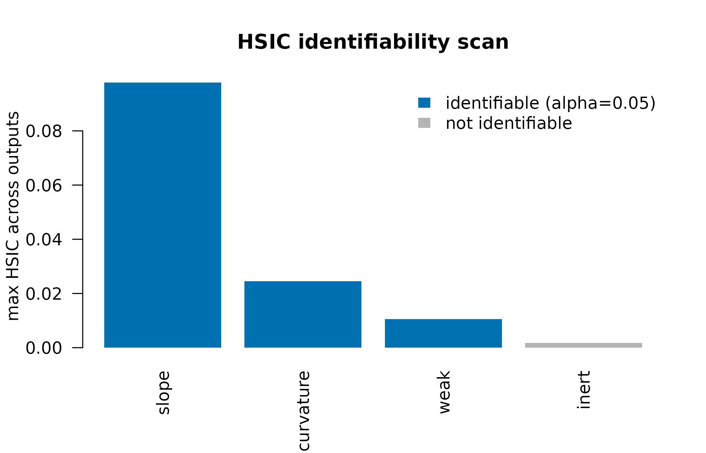
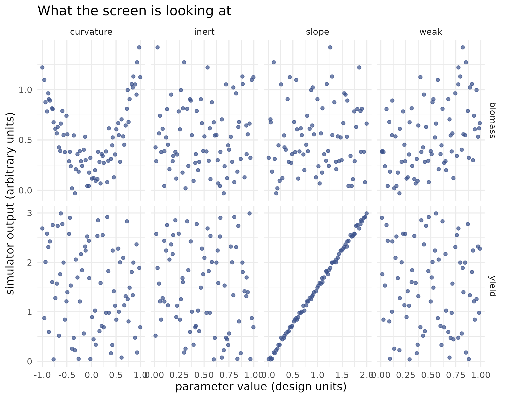

Which parameters are worth calibrating?
Source:vignettes/kernR-identifiability.Rmd
kernR-identifiability.RmdWhy
A modeller is about to spend a fortnight of compute on calibration. Every realisation of the ensemble smoother is a full simulator run, and I have four parameters I could put in the prior. If one of them does not move the outputs I care about, every realisation spent exploring it is wasted, and worse, it widens the posterior for no reason. Before I start the calibration, which parameters actually reach the outputs? This vignette answers that with a pre-calibration screen: a Latin-hypercube design over the parameter ranges, one cheap pass through the simulator, and a kernel independence test between every parameter and every output.
What
The screen is three verbs. lhs_design() builds a
Latin-hypercube design over a matrix of lower and upper bounds, one row
per simulator run, so the parameter space is covered evenly with far
fewer runs than a grid. The simulator is then run once per design row,
producing a matrix of outputs.
hsic_identifiability() takes the design and the outputs
and tests every parameter against every output with the Hilbert-Schmidt
Independence Criterion. HSIC is the right statistic here because it asks
a broader question than a variance-based Sobol index: does this
parameter influence the distribution of the output at all? A
parameter that changes an output’s spread or its tail while leaving its
variance intact is invisible to a variance budget and visible to HSIC.
The test returns one statistic and one permutation p-value per
parameter-output pair, adjusts the p-values across the whole grid
(Benjamini-Hochberg by default), and reports each parameter as
identifiable or not at alpha. as.data.frame()
flattens the grid for reporting; plot() draws the package’s
own ranked diagnostic.
The identifiable subset is what a calibration prior should contain,
and PESTO::pesto_ies() is where it goes next.
Do
A stand-in simulator
Running APSIM inside a vignette is not practical, so this is a
synthetic stub with four parameters whose roles are known by
construction: slope drives yield linearly,
curvature drives biomass quadratically, weak
has a small linear effect on biomass, and inert does
nothing at all.
The design
set.seed(1L)
bounds <- rbind(
slope = c(0.0, 2.0),
curvature = c(-1.0, 1.0),
weak = c(0.0, 1.0),
inert = c(0.0, 1.0)
)
design <- lhs_design(n = 80L, bounds = bounds, seed = 11L)
head(round(design, 3L))
#> slope curvature weak inert
#> [1,] 0.839 -0.734 0.190 0.084
#> [2,] 1.379 -0.319 0.579 0.152
#> [3,] 0.608 0.012 0.257 0.221
#> [4,] 0.392 -0.867 0.674 0.359
#> [5,] 0.902 0.841 0.891 0.794
#> [6,] 1.489 -0.119 0.922 0.637One pass through the simulator, then the screen
outputs <- stub_apsim(design)
fit <- hsic_identifiability(
theta = design, y = outputs, alpha = 0.05, p_adjust = "BH",
n_permutations = 299L, seed = 11L
)
fit
#>
#> HSIC Identifiability Scan
#>
#> Parameters: 4
#> Outputs: 2
#> N: 80
#> Permutations: 299
#> Alpha: 0.05
#> P-adjust: BH
#>
#> Identifiable (3): slope, curvature, weak
#> Not identifiable (1): inert
#>
#> Per-parameter ranking (descending max HSIC):
#> parameter max_HSIC min_p identifiable
#> slope 0.09783 0.0089 *
#> curvature 0.02458 0.0089 *
#> weak 0.01057 0.0089 *
#> inert 0.001757 0.9493
#>
#> (* = identifiable at alpha = 0.05 )| Parameter | Output | HSIC statistic | p-value | Adjusted p-value |
|---|---|---|---|---|
| slope | yield | 0.0978 | 0.0033 | 0.0089 |
| curvature | yield | 0.0033 | 0.2067 | 0.4133 |
| weak | yield | 0.0005 | 0.9800 | 0.9800 |
| inert | yield | 0.0018 | 0.5933 | 0.9493 |
| slope | biomass | 0.0012 | 0.7833 | 0.9800 |
| curvature | biomass | 0.0246 | 0.0033 | 0.0089 |
| weak | biomass | 0.0106 | 0.0033 | 0.0089 |
| inert | biomass | 0.0010 | 0.8733 | 0.9800 |
The package’s ranked diagnostic
plot(fit)
The package’s own diagnostic: maximum HSIC statistic per parameter across the two outputs, with the identifiability threshold marked.
The figure: the dependence the index is measuring
grid_df <- do.call(rbind, lapply(colnames(design), function(p1) {
do.call(rbind, lapply(colnames(outputs), function(o1) {
data.frame(
parameter = p1, output = o1,
value = design[, p1], response = outputs[, o1],
stringsAsFactors = FALSE
)
}))
}))
ggplot2::ggplot(grid_df, ggplot2::aes(x = value, y = response)) +
ggplot2::geom_point(colour = "#3b528b", alpha = 0.7, size = 1.3) +
ggplot2::facet_grid(output ~ parameter, scales = "free") +
ggplot2::labs(
x = "parameter value (design units)",
y = "simulator output (arbitrary units)",
title = "What the screen is looking at"
) +
ggplot2::theme_minimal()
Each design column against each simulator output, one panel per parameter-output pair. The screen’s verdict is a number per panel; the panels show why. Yield rises linearly with slope, biomass traces a parabola in curvature and a shallow slope in weak, and every panel involving inert is a formless cloud.
Handing the survivors to the calibration
identifiable_params <- names(fit$identifiable)[fit$identifiable]
identifiable_params
#> [1] "slope" "curvature" "weak"Those names are the parameter set to pass to
PESTO::pesto_ies() as the calibration prior; the parameters
left out are the ones that would have consumed realisations without
moving the outputs. The manifest contract that carries a PESTO ensemble
on to the rest of the orchestra is documented in PESTO itself, and the
vignette Did the management change shift the simulated
distribution? shows a pair of those manifests being compared.
Read
The screen recovers the construction. slope and
curvature are ranked 1 and 2 by maximum HSIC, with maximum
HSIC statistics of 0.0978 and 0.0246, and their smallest adjusted
p-values are 0.00889 and 0.00889 against a permutation floor of 0.0033.
Each drives one output almost deterministically, and the corresponding
panels of the figure are a straight line and a parabola.
weak returns a maximum statistic of 0.0106 with a minimum
adjusted p-value of 0.00889, and the screen calls it identifiable at
alpha = 0.05: its effect on biomass is real but small
against the quadratic term, which is what the shallow trend in its panel
shows. inert returns 0.00176 with a minimum adjusted
p-value of 0.949 and is not identifiable, as built.
3 of the 4 parameters survive the screen. Sending only those into the calibration is the saving: on a simulator where each realisation is a full model run, the parameters left out would have consumed the same budget as the parameters that matter and returned a wider posterior for it.
Limits
The simulator here is a stub, chosen so that the right answer is known and the vignette runs in seconds; a real crop model has correlated parameters, interactions and outputs on very different scales, and the screen inherits all of that. This is a first-order screen: it tests each parameter against each output marginally, so a parameter that acts only through an interaction can pass unnoticed, which is exactly the case the total-order indices in Which parameters change the shape of the output distribution? are built for. A parameter declared not identifiable is not shown to be inert; it is shown to have no detectable effect at this design size, on these outputs, at this noise level, and a larger design can promote it. The reverse holds too: with many parameters and many outputs, unadjusted p-values would manufacture identifiable parameters, which is why the grid is adjusted by default. The screen also says nothing about the sign or the shape of an effect, only that one is present.
Notes on practice
Design size. The number of design rows should
comfortably exceed the number of parameters; n at least ten
times the parameter count is a workable starting point at
agricultural-systems scale.
Permutations. The smallest p-value a permutation
null can express is 1 / (n_permutations + 1), so testing at
alpha = 0.05 needs at least 199 permutations before
adjustment; 199 to 499 covers most screens.
Multiple testing. With p parameters and
q outputs the screen runs p times
q tests, and the default Benjamini-Hochberg adjustment
controls the false discovery rate across that whole grid.
Cost. Kernel matrices are reused across the grid, so
construction costs order (p + q) n^2 and the permutation
null costs order p q B n^2 for B
permutations.
What to read next
Which parameters change the shape of the output distribution? is the same kernel dependence measure used as a graded sensitivity index rather than a pass-or-fail screen, and adds total-order indices for interaction. Scaling HSIC to large ensembles covers what to do when the design grows past the point where an exact Gram matrix is affordable. Did the management change shift the simulated distribution? picks the story up after calibration, when two forward ensembles are to be compared.
References
- Da Veiga, S. (2015). Global sensitivity analysis with dependence measures. Journal of Statistical Computation and Simulation, 85(7), 1283-1305.
- Gretton, A., Fukumizu, K., Teo, C. H., Song, L., Scholkopf, B., & Smola, A. J. (2008). A kernel statistical test of independence. Advances in Neural Information Processing Systems, 20.
- Hu, R., Sejdinovic, D., & Evans, R. J. (2024). A kernel test for causal association via noise contrastive backdoor adjustment. Journal of Machine Learning Research, 25(160), 1-56.
Reproduce
Seed 1 for the simulator noise and
seed = 11L for both the Latin-hypercube design and the
permutation null. Package versions follow.
sessionInfo()
#> R version 4.6.1 (2026-06-24)
#> Platform: x86_64-pc-linux-gnu
#> Running under: Ubuntu 24.04.4 LTS
#>
#> Matrix products: default
#> BLAS: /usr/lib/x86_64-linux-gnu/openblas-pthread/libblas.so.3
#> LAPACK: /usr/lib/x86_64-linux-gnu/openblas-pthread/libopenblasp-r0.3.26.so; LAPACK version 3.12.0
#>
#> locale:
#> [1] LC_CTYPE=C.UTF-8 LC_NUMERIC=C LC_TIME=C.UTF-8
#> [4] LC_COLLATE=C.UTF-8 LC_MONETARY=C.UTF-8 LC_MESSAGES=C.UTF-8
#> [7] LC_PAPER=C.UTF-8 LC_NAME=C LC_ADDRESS=C
#> [10] LC_TELEPHONE=C LC_MEASUREMENT=C.UTF-8 LC_IDENTIFICATION=C
#>
#> time zone: UTC
#> tzcode source: system (glibc)
#>
#> attached base packages:
#> [1] stats graphics grDevices utils datasets methods base
#>
#> other attached packages:
#> [1] kernR_0.8.2
#>
#> loaded via a namespace (and not attached):
#> [1] vctrs_0.7.3 cli_3.6.6 knitr_1.51
#> [4] rlang_1.3.0 xfun_0.60 otel_0.2.0
#> [7] generics_0.1.4 S7_0.2.2 textshaping_1.0.5
#> [10] data.table_1.18.6.1 jsonlite_2.0.0 labeling_0.4.3
#> [13] glue_1.8.1 htmltools_0.5.9 PESTO_0.10.1
#> [16] ragg_1.5.2 sass_0.4.10 scales_1.4.0
#> [19] rmarkdown_2.32 grid_4.6.1 evaluate_1.0.5
#> [22] jquerylib_0.1.4 fastmap_1.2.0 yaml_2.3.12
#> [25] lifecycle_1.0.5 compiler_4.6.1 RColorBrewer_1.1-3
#> [28] fs_2.1.0 Rcpp_1.1.2 farver_2.1.2
#> [31] systemfonts_1.3.2 digest_0.6.39 R6_2.6.1
#> [34] bslib_0.12.0 withr_3.0.3 tools_4.6.1
#> [37] gtable_0.3.6 pkgdown_2.2.1 ggplot2_4.0.3
#> [40] cachem_1.1.0 desc_1.4.3